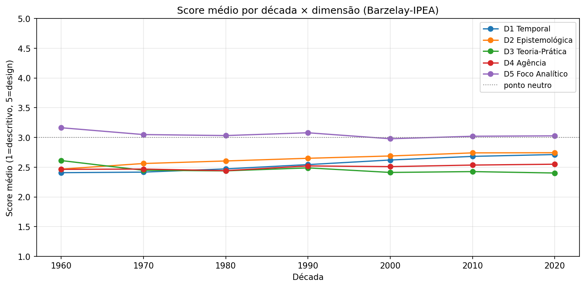
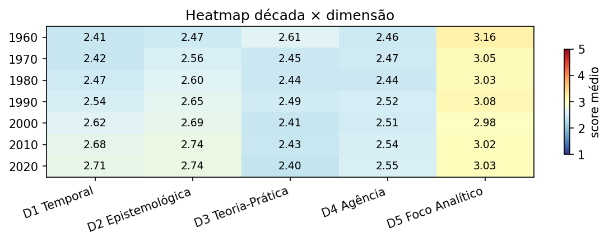
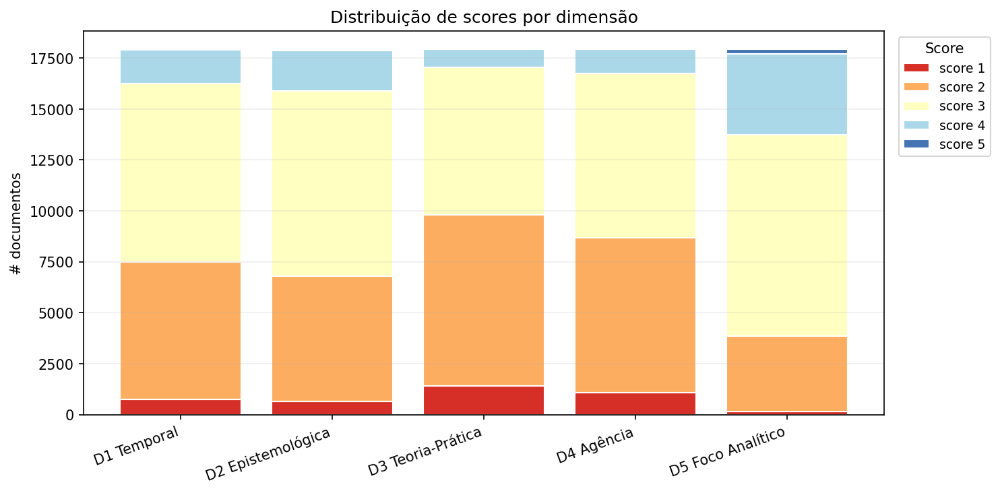
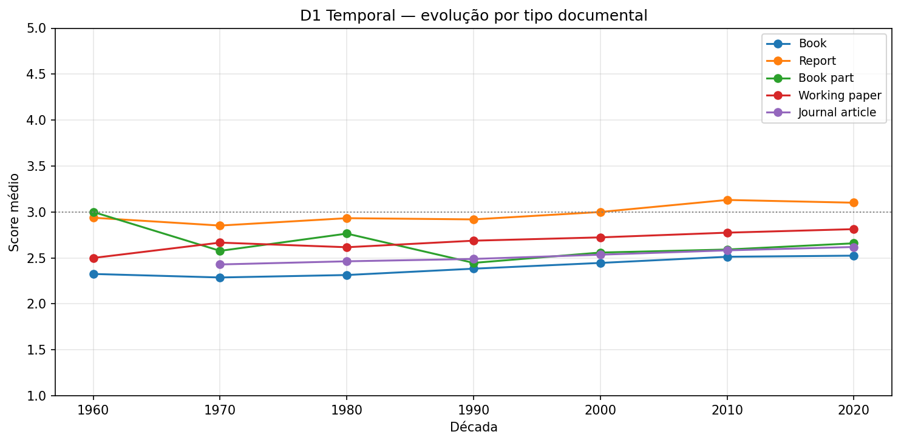
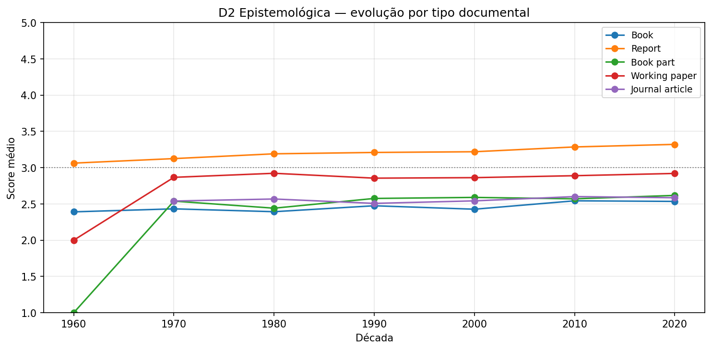
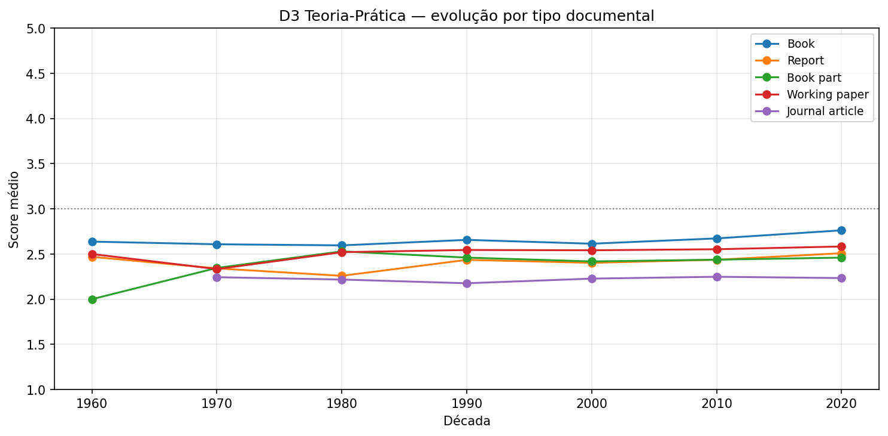
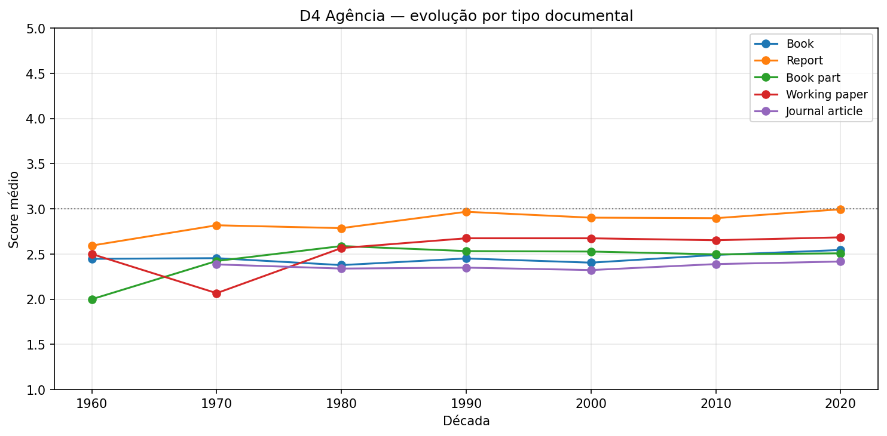
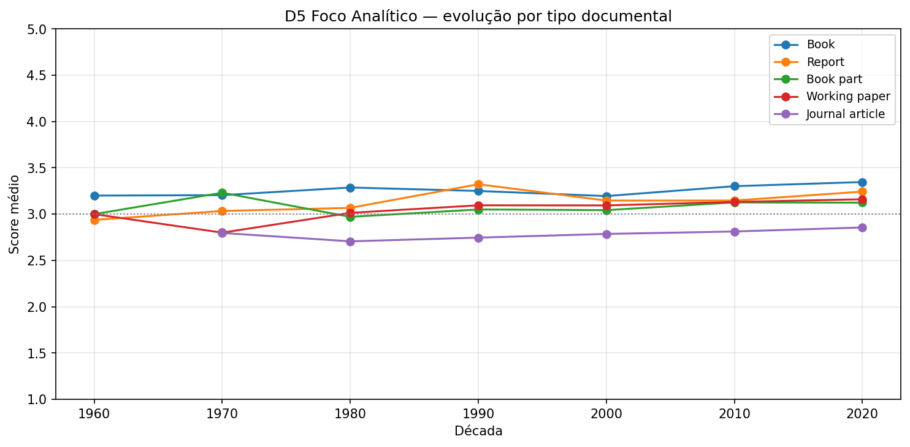
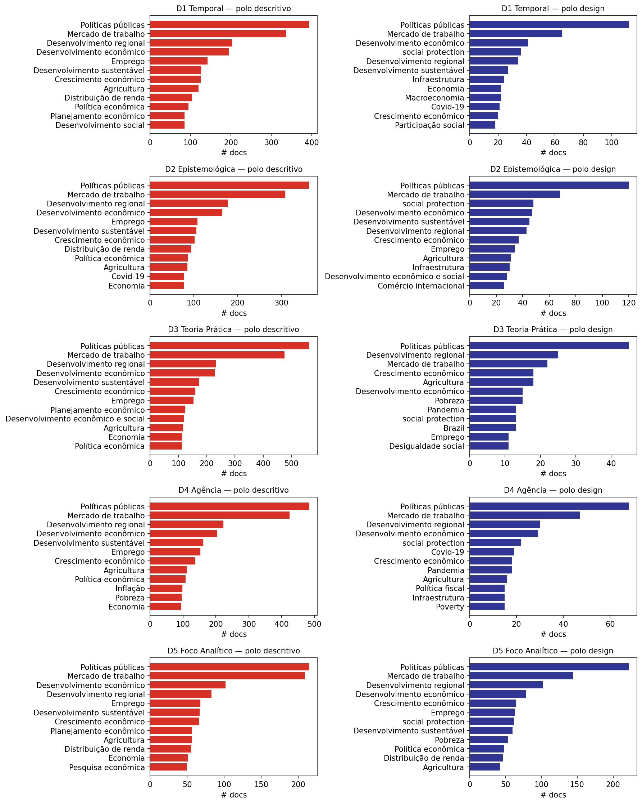

Classificação sistemática do repositório do IPEA quanto a marcadores de idealização (Barzelay 2019) — via LLM com validação humana.
O conhecimento produzido historicamente pelo IPEA exibe orientação para design (idealização forte) ou predominantemente marcadores descritivos (idealização fraca)? O corpus do repositório institucional é classificado em cinco dimensões operacionais derivadas de Michael Barzelay, escala Likert 1–5, via LLM com validação humana e calibração isotônica.
| Dim | Polo 1–2 (descritivo) | Polo 4–5 (design) |
|---|---|---|
| D1 Temporal | Backward-looking ("foi observado") | Forward-looking ("deveria") |
| D2 Epistemológica | Descritiva ("os dados mostram") | Normativa ("recomenda-se") |
| D3 Teoria-prática | Segregada (revisão isolada) | Integrada (teoria → desenho) |
| D4 Agência | Passiva/estrutural | Atores institucionais nomeados |
| D5 Foco analítico | Fragmentado (variável a variável) | Sintético (design coerente) |
ANTHROPIC_API_KEY.








| Década | D1 | D2 | D3 | D4 | D5 |
|---|---|---|---|---|---|
| 1960 | 2.41 | 2.47 | 2.61 | 2.46 | 3.16 |
| 1970 | 2.42 | 2.56 | 2.45 | 2.47 | 3.05 |
| 1980 | 2.47 | 2.60 | 2.44 | 2.44 | 3.03 |
| 1990 | 2.54 | 2.65 | 2.49 | 2.52 | 3.08 |
| 2000 | 2.62 | 2.69 | 2.41 | 2.51 | 2.98 |
| 2010 | 2.68 | 2.74 | 2.43 | 2.54 | 3.02 |
| 2020 | 2.71 | 2.74 | 2.40 | 2.55 | 3.03 |
| Década | N |
|---|---|
| 80 | 1 |
| 1960 | 250 |
| 1970 | 836 |
| 1980 | 1.268 |
| 1990 | 1.855 |
| 2000 | 2.771 |
| 2010 | 6.086 |
| 2020 | 4.500 |
| Tipo | N |
|---|---|
| Working paper | 5.015 |
| Journal article | 5.003 |
| Book | 2.617 |
| Book part | 2.093 |
| Journal | 1.038 |
| Report | 823 |
| Journal Article | 608 |
| 382 | |
| Researchers | 175 |
| Eventos | 74 |
# 1. Rodar Fase 2 completa (apenas a amostra 10% leva ~3h; todo corpus ~30h)
uv run python -m src.extracao --input data/interim/metadados_amostra10.parquet --engine pymupdf
# 2. Rodar Fase 3 real (precisa chave API — custo ~$30-80 no 10%)
export ANTHROPIC_API_KEY=sk-ant-...
uv run python -m src.classificacao --input data/interim/textos_amostra10.parquet
# 3. Regenerar o site
uv run python -m src.analise.build_siteGitHub Pages: em Settings → Pages, escolha Deploy from a branch, main / /docs.